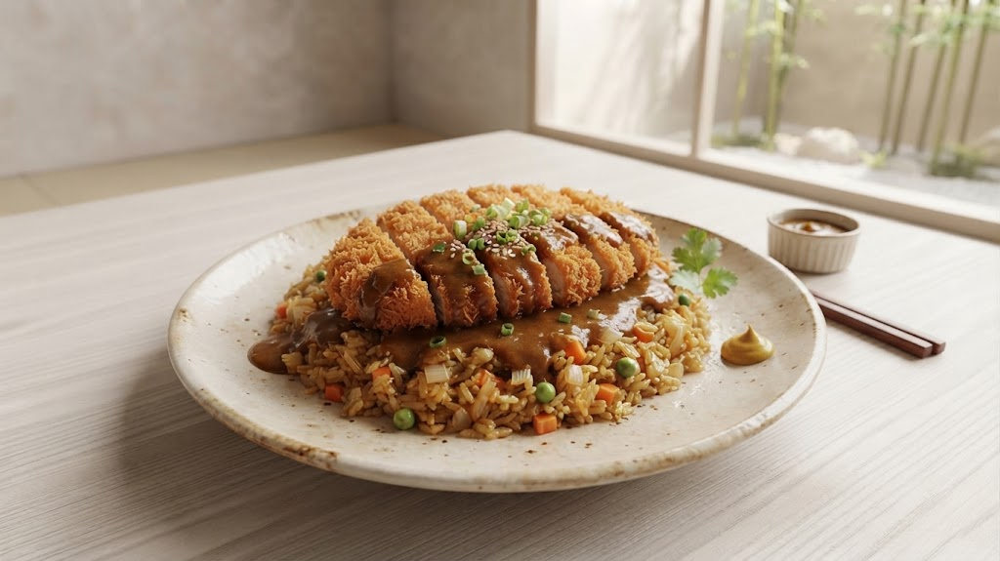
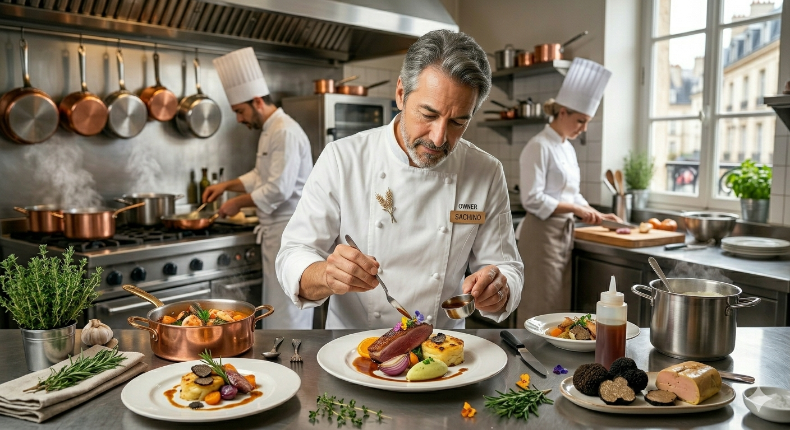
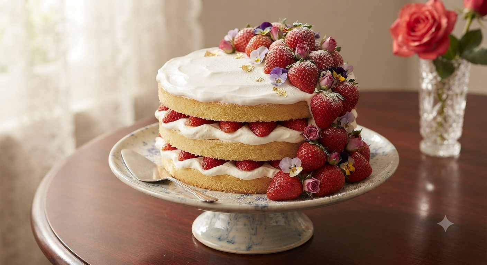
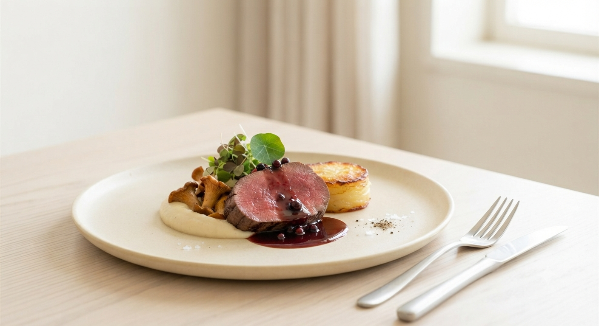
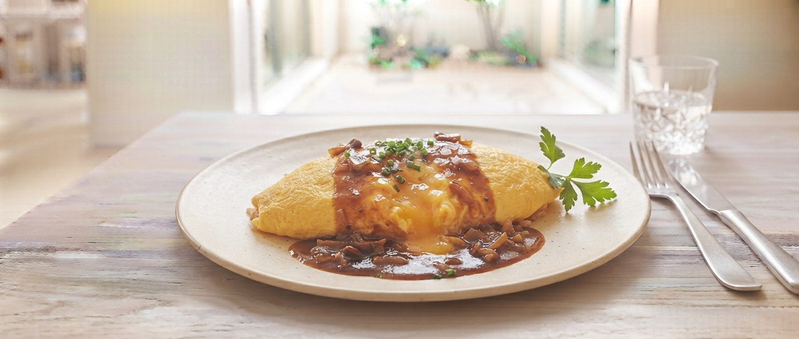

創業47年
変わらぬ情熱。
一流シェフが贈る、
日常の中の「特別」。
昭和53年の創業以来、私たちは「基本に忠実に」を合言葉に、一つひとつの食材と向き合ってきました。東京の名店で9年の修行を積んだオーナーシェフ原田良一が、地産地消にこだわり、幅広い年代の方に愛される「本物」を提供し続けています。
Authentic
本格フランス料理の技法
Local
岩手千厩の厳選食材

創業47年
変わらぬ情熱。
昭和53年の創業以来、私たちは「基本に忠実に」を合言葉に、一つひとつの食材と向き合ってきました。東京の名店で9年の修行を積んだオーナーシェフ原田良一が、地産地消にこだわり、幅広い年代の方に愛される「本物」を提供し続けています。
本格フランス料理の技法
岩手千厩の厳選食材
東京での9年間の厳しい修行を経て、昭和53年、両親が営んでいた「あさひや食堂」を引き継ぎました。「基本に忠実に」という想いは、震災被災地支援や地域の食育活動への取り組みにも繋がっています。
地域の皆様に愛される「街のレストラン」でありながら、本格的な味をリーズナブルに。私たちの提供する一皿で、お客様が笑顔になること。それが、40年以上変わらない私たちの願いです。

「大変失礼ですが、千厩にこんなに美味しいフレンチが食べられるお店があったなんて驚きでした。予約して正解。」
「オムライスはいちごのタルトを注文。オムライスは大人味でほろ苦さがいい感じ。死ぬまでに絶対また伺いたいです。」
「お値段がリーズナブルで、お店の方のサービスも親切。カレーピラフはコスパ良すぎです。」
あさひやが新しくお届けする、特別な体験と味わいの予感。

大切な方との誕生日や結婚記念日に。特製デザートプレートやメッセージカード、記念撮影サービスが付いた、記憶に残るプライベートディナープランを準備中です。

千厩や周辺地域でその時期に採れた極上の食材を使用。フレンチの技法で素材の旨味を極限まで引き出した、春夏秋冬それぞれの限定コースを順次展開予定です。
